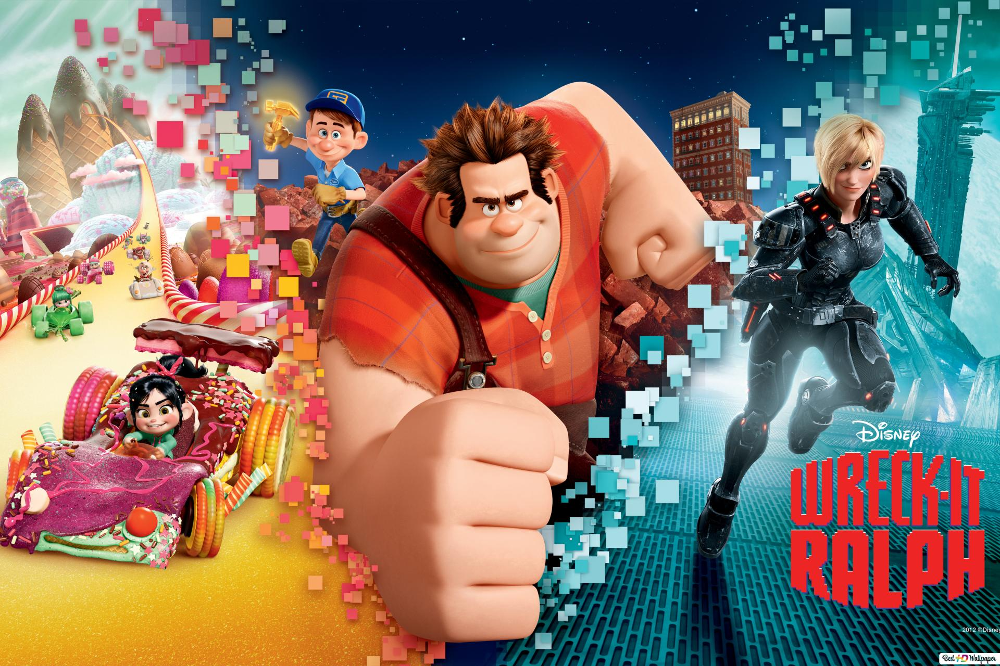

About Ralph
Ralph is awesome. He's an 8-bit videogame bad guy who travels the length of the arcade to prove that he's a good guy.
Ralph and his friends
Ralph's Characteristics
- He's got big hands.
- He's treated as bad-ass.
- He's trying to be a good guy.
Ralph's friends
Ralph has some awesome friends. I think his best friend is Glitch. She's awesome. Click on the links below to read more about them: